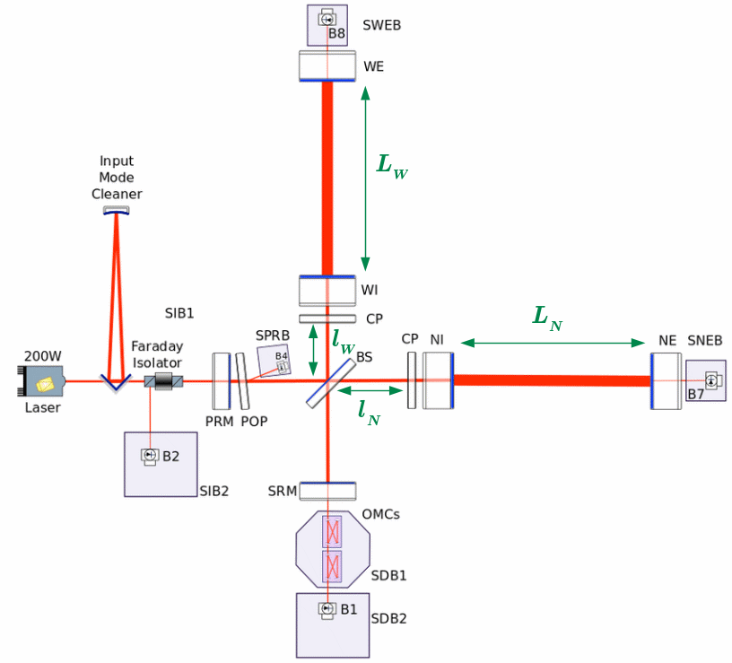

Noise modelisation and propagation in gravitational wave detector
To detect gravitational waves with maximum efficiency, interferometers must be maintained at their operating point — ideally on a dark fringe — so that any deviation (from gravitational wave signals) creates detectable interference patterns at the photodiodes. This is achieved through multiple feedback control loops that stabilize the mirror positions and the input laser frequency.
However, these control systems can also serve as channels through which instrumental noise propagates within the detector. A significant part of my PhD work involved modeling these feedback loops to better understand how noise is introduced and transferred throughout the system.
Interferometer Degrees of Freedom

Representation of the interferometer, and the critical lengths.
The longitudinal control of the interferometer is based on four main degrees of freedom (DoF), which represent critical optical lengths in the system. These are:
-
CARM (Common Arm):
\(CARM = \frac{L_N + L_W}{2}\) Controls the average length of the Fabry-Pérot arms using signal from photodiodeB2. -
DARM (Differential Arm):
\(DARM = L_N - L_W\) Key observable for gravitational waves, controlling the end mirror positions. -
MICH (Michelson):
\(MICH = l_N - l_W\) Measures asymmetry in the short arms, extracted via photodiodeB4. -
PRCL (Power Recycling Cavity Length):
\(PRCL = l_0 + \frac{l_W + l_N}{2}\) Coupled with MICH, also measured viaB4, and used to stabilize the power recycling mirror (PRM).
These DoFs define the longitudinal control architecture.
Interferometer and Control Loop Modeling
Interferometer control scheme
The noise propagation simulation framework, called Noise Budget, includes all major subsystems:
- Sensing (green): Converts photodiode signals into error signals for each DoF.
- Mirror/Frequency Control (yellow): Converts errors into corrective signals.
- Driving (orange): Simulates actual mirror actuation.
- Laser (blue): Simulates laser frequency response.
- Optickle (violet): Models optical response to all mirror and laser perturbations.
These modules together simulate the closed-loop noise propagation and are used to test new control strategies or predict future interferometer performance.
Study of the MICH Loop
The MICH control loop is responsible for stabilizing short-arm asymmetry.
For frequencies above 50 Hz, the loop is dominated by detection noise (electronic + shot noise).
Assuming this dominance, I was able to derive the injection transfer function \(Y(f)\) for the loop and validate the simulated model against actual interferometer data.
This confirmed the theoretical noise paths and highlighted where detection noise dominates the system.
Study of the SSFS Loop (Laser Frequency Stabilization)
The laser introduces phase noise, which is integrated from frequency fluctuations. Due to arm asymmetries (mirror reflectivity, thermal effects), this phase noise couples into the main gravitational wave signal channel.
The Second Stage Frequency Stabilization (SSFS) loop uses reflected optical signals at POP, measured via photodiode B4, to compute correction signals for the laser.
This loop is influenced by time-varying transfer functions due to thermal drifts and asymmetry fluctuations. To model this, I introduced time-dependent gains:
- \(F_{PC}(t)\): Power Coupling Gain
- \(F_{TC}(t)\): Transfer Coupling Gain
- \(Y(f, t)\): Injection Transfer Function
These parameters were calibrated using broadband noise injections \(N_{inj}\) and validated at times \(t_{inj}\). The model was used to explain differences between simulated and real data in DARM.
Conclusion
The feedback control systems in the Virgo interferometer are essential for keeping the detector in its optimal operating state. By modeling the noise propagation through these loops, it’s possible to:
- Identify dominant noise sources
- Design more effective control strategies
- Predict the sensitivity of future detectors
Through this work, I demonstrated that:
- The MICH loop is dominated by detection noise above 50Hz.
- The SSFS loop requires time-varying modeling due to asymmetries.
Overall, this project not only validated important theoretical models, but also highlighted remaining challenges, such as unexplained bias and underestimation of some residual noise sources.
Future work should investigate whether these mismatches originate from modeling assumptions, unmodeled loop couplings, or unknown noise mechanisms.